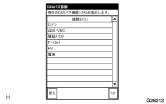

CANバス診断画面の‘CANバス接続ECU確認’を選択する。
- SST
- 09991-70200
|  |
画面が表示され、現在正常にCAN通信に接続されているECU、センサが表示される。
- □ 参 考 □
- 本来接続されているはずのECU、センサが表示されない場合は、その系統の通信途絶である。(
 参照)
参照) - CANバスに接続されているECU、センサがない場合は‘現在CANバスに接続されているECUはありません。’と表示される。
約1分間画面表示を確認し、表示←→非表示する項目がないことを確認する。
- □ 参 考 □
- DLC3を除くいずれかの支線で片側断線している場合、断線していないもう一方の通信線出力がノイズとなり、他のECU、センサの応答(表示)に障害をおよぼす場合がある。この場合、表示←→非表示するECU、センサの支線は正常である。
- 表示←→非表示する項目がある場合は、応答のない(項目にまったく表示しない)ECU、センサの支線片側断線を修理する。